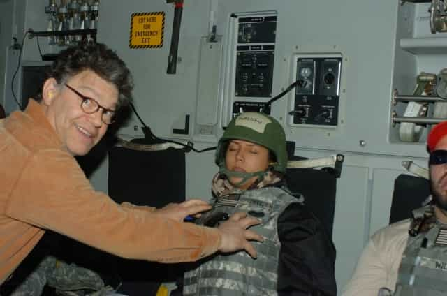

This account syndicates news from other media outlets.


In December of 2006, I embarked on my ninth USO Tour to entertain our troops, my eighth to the Middle East since the 9/11 attacks. My father served in Vietnam and my then-boyfriend (and now husband, Chris) is a pilot in the Air Force, so bringing a ‘little piece of home’ to service members stationed far away from their families was both my passion and my privilege.
Picture of accuser, Leann Tweeden
Also on the trip were country music artists Darryl Worley, Mark Wills, Keni Thomas, and some cheerleaders from the Dallas Cowboys. The headliner was comedian and now-senator, Al Franken.
Franken had written some skits for the show and brought props and costumes to go along with them. Like many USO shows before and since, the skits were full of sexual innuendo geared toward a young, male audience.
As a TV host and sports broadcaster, as well as a model familiar to the audience from the covers of FHM, Maxim and Playboy, I was only expecting to emcee and introduce the acts, but Franken said he had written a part for me that he thought would be funny, and I agreed to play along.
When I saw the script, Franken had written a moment when his character comes at me for a ‘kiss’. I suspected what he was after, but I figured I could turn my head at the last minute, or put my hand over his mouth, to get more laughs from the crowd.
On the day of the show Franken and I were alone backstage going over our lines one last time. He said to me, “We need to rehearse the kiss.” I laughed and ignored him. Then he said it again. I said something like, ‘Relax Al, this isn’t SNL…we don’t need to rehearse the kiss.’
He continued to insist, and I was beginning to get uncomfortable.
He repeated that actors really need to rehearse everything and that we must practice the kiss. I said ‘OK’ so he would stop badgering me. We did the line leading up to the kiss and then he came at me, put his hand on the back of my head, mashed his lips against mine and aggressively stuck his tongue in my mouth.
I immediately pushed him away with both of my hands against his chest and told him if he ever did that to me again I wouldn’t be so nice about it the next time.
I walked away. All I could think about was getting to a bathroom as fast as possible to rinse the taste of him out of my mouth.
I felt disgusted and violated.
Not long after, I performed the skit as written, carefully turning my head so he couldn’t kiss me on the lips.
No one saw what happened backstage. I didn’t tell the Sergeant Major of the Army, who was the sponsor of the tour. I didn’t tell our USO rep what happened.
At the time I didn’t want to cause trouble. We were in the middle of a war zone, it was the first show of our Holiday tour, I was a professional, and I could take care of myself. I told a few of the others on the tour what Franken had done and they knew how I felt about it.
I tried to let it go, but I was angry.
Other than our dialogue on stage, I never had a voluntary conversation with Al Franken again. I avoided him as much as possible and made sure I was never alone with him again for the rest of the tour.
Franken repaid me with petty insults, including drawing devil horns on at least one of the headshots I was autographing for the troops.
But he didn’t stop there.
The tour wrapped and on Christmas Eve we began the 36-hour trip home to L.A. After 2 weeks of grueling travel and performing I was exhausted. When our C-17 cargo plane took off from Afghanistan I immediately fell asleep, even though I was still wearing my flak vest and Kevlar helmet.
It wasn’t until I was back in the US and looking through the CD of photos we were given by the photographer that I saw this one:

I couldn’t believe it. He groped me, without my consent, while I was asleep.
I felt violated all over again. Embarrassed. Belittled. Humiliated.
How dare anyone grab my breasts like this and think it’s funny?
I told my husband everything that happened and showed him the picture.
I wanted to shout my story to the world with a megaphone to anyone who would listen, but even as angry as I was, I was worried about the potential backlash and damage going public might have on my career as a broadcaster.
But that was then, this is now. I’m no longer afraid.
Today, I am the news anchor on McIntyre in the Morning on KABC Radio in Los Angeles. My colleagues are some of the most supportive people I’ve ever worked with in my career. Like everyone in the media, we’ve been reporting on the Harvey Weinstein sexual misconduct allegations since they broke, and the flood of similar stories that have come out about others.
A few weeks ago, we had California Congresswoman Jackie Speier on the show and she told us her story of being sexually assaulted when she was a young Congressional aide. She described how a powerful man in the office where she worked ‘held her face, kissed her and stuck his tongue in her mouth.’
At that moment, I thought to myself, Al Franken did that exact same thing to me.
I had locked up those memories of helplessness and violation for a long time, but they all came rushing back to me and my hands clinched into fists like it was yesterday.
I’m still angry at what Al Franken did to me.
Every time I hear his voice or see his face, I am angry. I am angry that I did his stupid skit for the rest of that tour. I am angry that I didn’t call him out in front of everyone when I had the microphone in my hand every night after that. I wanted to. But I didn’t want to rock the boat. I was there to entertain the troops and make sure they forgot about where they were for a few hours. Someday, I thought to myself, I would tell my story.
That day is now.
Senator Franken, you wrote the script. But there’s nothing funny about sexual assault.
You wrote the scene that would include you kissing me and then relentlessly badgered me into ‘rehearsing’ the kiss with you backstage when we were alone.
You knew exactly what you were doing. You forcibly kissed me without my consent, grabbed my breasts while I was sleeping and had someone take a photo of you doing it, knowing I would see it later, and be ashamed.
While debating whether or not to go public, I even thought to myself, so much worse has happened to so many others, maybe my story isn’t worth telling? But my story is worth telling.
Not just because 2017 is not 2006, or because I am much more secure in my career now than I was then, and not because I’m still angry.
I’m telling my story because there may be others.
Don’t Miss: Charlie Sheen Accused Of Having Sex With Then 13-Year-Old Corey Haim On Set Of Movie Lucas